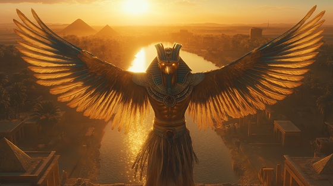

Fly into the final reckoning of divine justice with “Eye of the Horizon”, a soaring, thunderous power metal anthem for Horus — the falcon-headed god of kings, the avenger of Osiris, and the celestial prince who rose to rule the world with vision and law.
Who is Horus?
Horus is one of the most iconic gods of Egyptian mythology — the son of Isis and Osiris, born to reclaim his father’s throne from Seth, god of chaos. After a long and mythic battle, Horus defeated Seth, becoming the divine model for every pharaoh to follow.
Often depicted as a falcon or falcon-headed man, Horus symbolizes divine justice, protection, kingship, and the ever-watchful eye. The Eye of Horus became a sacred symbol of healing, power, and vigilance across the ages.
Horus: Eye of the Horizon
Born of tears, of blood, of spell
Where gods had died and darkness fell
I rose from grief, a feathered flame
To claim the sky in father’s name
My wings were forged in silent oath
To rise for light, to strike for both
The dead who speak, the land betrayed
I soared where justice had decayed
The eye I wear is wrath and light
It sees the wrong, it makes it right
I am Horus — eye of flame
The sky reborn through sacred claim
The falcon prince, the winds obey
I blaze the dawn and burn the grey
Through storm and sun, my throne aligns
The justice born in blood and signs
I faced the beast that wore my kin
In desert winds and wrathful din
We clashed beneath the silent gods
And I became the voice of odds
No vengeance blind, no fury wild
But rightful fire from mother’s child
With Ra beside, with Ma’at near
I struck and cast aside the fear
The eye I wear is wrath and light
It sees the wrong, it makes it right
I am Horus — eye of flame
The sky reborn through sacred claim
The falcon prince, the winds obey
I blaze the dawn and burn the grey
Through storm and sun, my throne aligns
The justice born in blood and signs
Now pharaohs rise by falcon’s hand
My wings protect this ancient land
From sky to Nile, from shrine to sand
I rule with law — not with demand
The crown I wear was born of loss
A gift from pain, not won by gloss
But through the fire, I endure
And lead with strength that still is pure
The eye I wear is wrath and light
It sees the wrong, it makes it right
I am Horus — eye of flame
The sky reborn through sacred claim
The falcon prince, the winds obey
I blaze the dawn and burn the grey
Through storm and sun, my throne aligns
The justice born in blood and signs
So let the traitor tremble still
For I am heir, and I am will
No god may steal what fate bestows
When truth in flight eternal goes
So look to dawn, and find me there
The falcon’s cry through golden air
I am Horus, king of skies
The eye that sees, the sun that flies